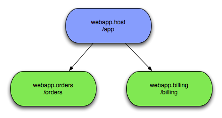

This Guide covers Virgo Snaps and assumes you are already familiar with OSGi and Virgo. See here.
Using Virgo Snaps, or VS for short, you can construct a web application from multiple OSGi bundles, each of which serves up content for a distinct sub-portion of your application's URL space. VS applications are arranged in a parent/child structure, with each application having at most one top-level parent, and zero or more children/grand children and so on. Parents are referred to as the hosts, children as snaps.

Here you see that any HTTP requests for '/app' will be dealt with by the host bundle while '/app/orders'
and '/app/billing' will be dealt with by their respective snaps bundles. Each host/snap can use completely different web technologies
to deal with the requests, VS places no restrictions on your choices. The developer decides how to split
the application up and how closely to couple the host and various snaps. VS has been designed to be as
un-invasive as possible while still making it easy to share information between the host and its snaps.